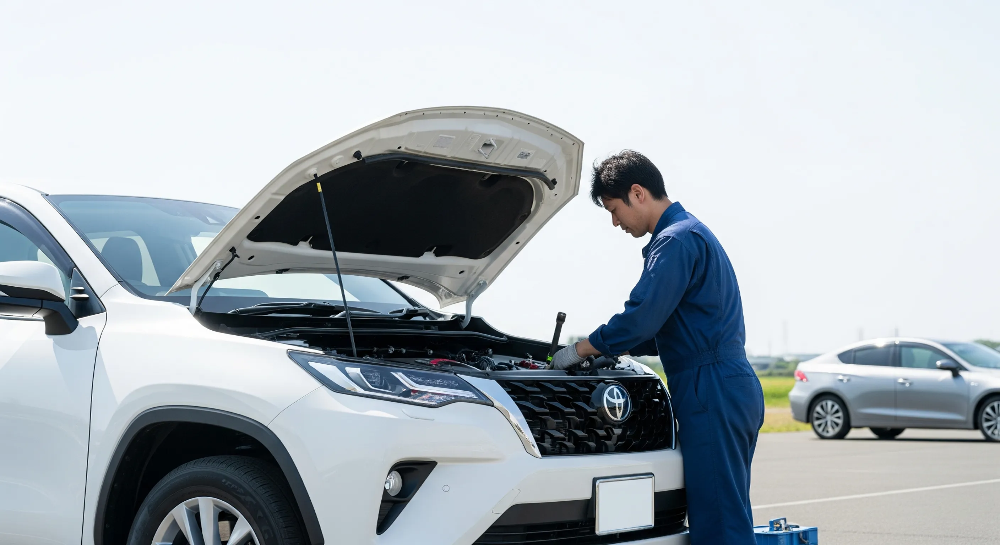
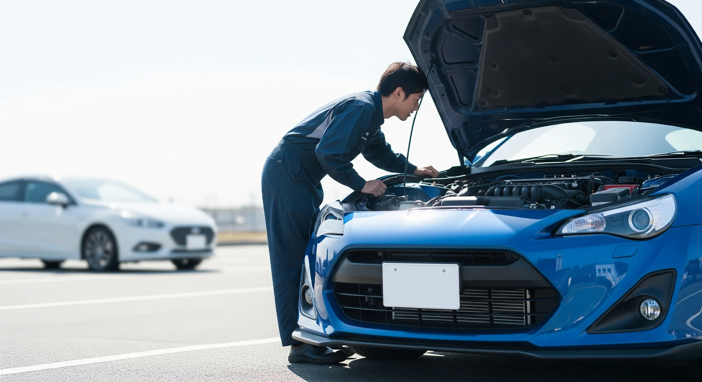
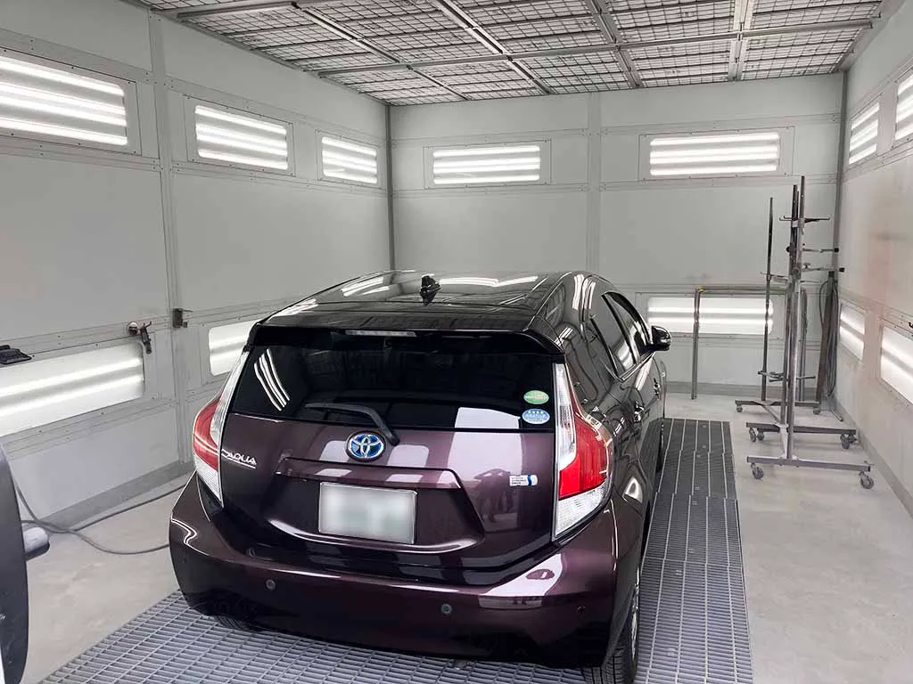

車検・整備
検査員在籍。社内完結の体制で、予約状況により最短半日から1日で対応します。


SINCE 1964
1964年（昭和39年）創業。板金塗装からスタートし、 いまでは販売・整備・塗装・車検を一貫対応。
仕事の約8割はディーラー様や保険会社様からのご紹介。 地域で積み上げた実績が、日々の安心につながっています。
社内には自動車検査員が在籍。 最終検査〜保安基準適合証の発行、車検証の更新まで社内完結。 だから車検は最短 半日〜1日で対応できます。
車検・整備・板金塗装・保険修理・お車探しまで、地域のカーライフをまとめて支えます。
検査員在籍。社内完結の体制で、予約状況により最短半日から1日で対応します。
小さなキズから事故修理まで、仕上がりと手続きの両方を丁寧にサポートします。
購入後の整備や車検まで一貫対応。日々の使い方に合う一台を一緒に探します。
国内全メーカーの新車相談、中古車販売、車検・整備、板金塗装、ロードサービスまで。
日常のメンテから万一のトラブルまで一貫対応します。
修理中の代車、車のお預かり、修理後のお届けまで含めて、来店の負担を減らせるように対応します。
事故後の修理内容、見積り、保険会社との確認、代車の手配までまとめて相談できます。JA共済の自動車共済も、補償内容や条件を確認しながらご案内できます。
修理中の移動手段や、修理後のお届けまで含めて相談できます。仕事やご家庭の都合で来店しにくい方も、まずはご相談ください。
板金塗装の設備も更新しながら、見た目のきれいさだけでなく、下地処理や色合わせまで丁寧に確認します。
掲載在庫だけでなく、条件から中古車を探す相談もできます。新車は国内全メーカー相談可能です。
業者専用オークション等も活用し、仕入れ後に必要な点検・整備や板金塗装を行い、きれいに整えてからご提案します。掲載在庫に希望の車がない時ほどご相談ください。
掲載在庫はグーネットで更新しています。気になる車は、来店前に電話で在庫状況をご確認ください。
軽自動車、コンパクト、ミニバン、商用車まで、用途・予算・納期に合わせて国内メーカーからご提案します。
直近30日でよく読まれている記事トップ3です。
板金塗装
板金塗装工場へ直接相談するメリットと、見積りで確認したいポイントを整理しました。
中古車相談
在庫にない車を条件から探し、状態確認や必要な点検・整備を行って購入する考え方をまとめました。
保険相談
保険料だけでなく、事故時に誰へ相談するかまで含めた選び方を整理しました。
予約状況や整備内容によりますが、自動車検査員が在籍しているため、社内完結で最短半日から1日で対応できる場合があります。
小さなキズやへこみから、事故による保険修理まで相談できます。見積り、修理方法、保険会社への連絡についても状況に応じてサポートします。
はい。販売後の車検、整備、修理まで一貫して対応しています。
はい。国内全メーカーの新車をご相談いただけます。使い方やご予算に合わせてご提案します。
ご相談から納車までスムーズで安心なサポート体制
お電話またはご来店にて、お気軽にご相談ください。
ご希望の日時にご来店いただき、車両を拝見しながらお見積りいたします。
ご承認いただいた後、熟練スタッフが速やかに作業に着手します。
作業完了後、最終チェックを丁寧に行い、品質を保証します。
仕上がりをご確認いただき、ご納車致します。またはお引き取りにお越しください。
最近の修理・整備の事例をご紹介します。

2025.05.01
私たちは個々の働き方を尊重し、
プロフェッショナルな技術者を育みます。
心にゆとりを持つからこそ
最高のサービスがご提供できると信じています。